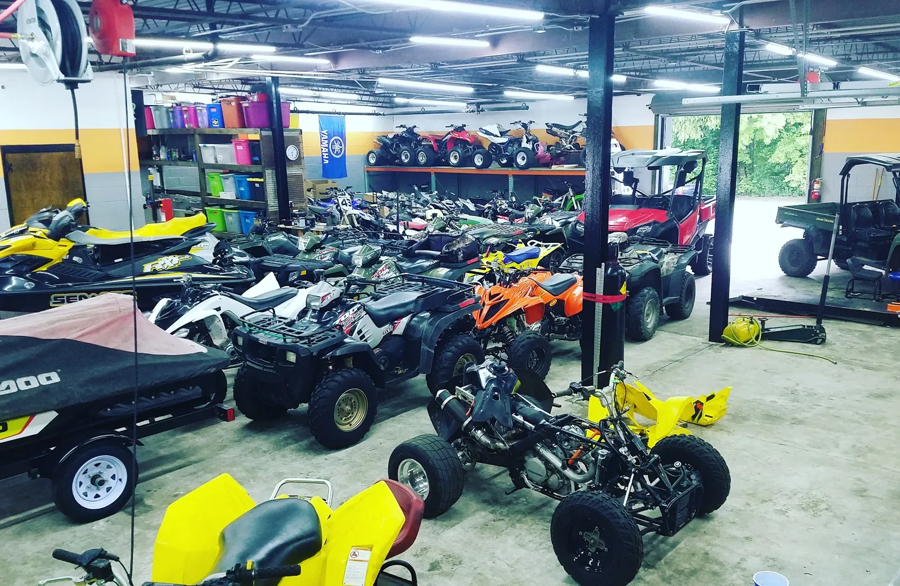
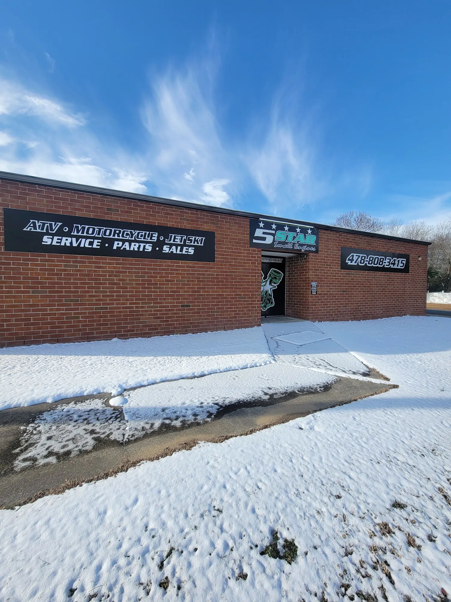
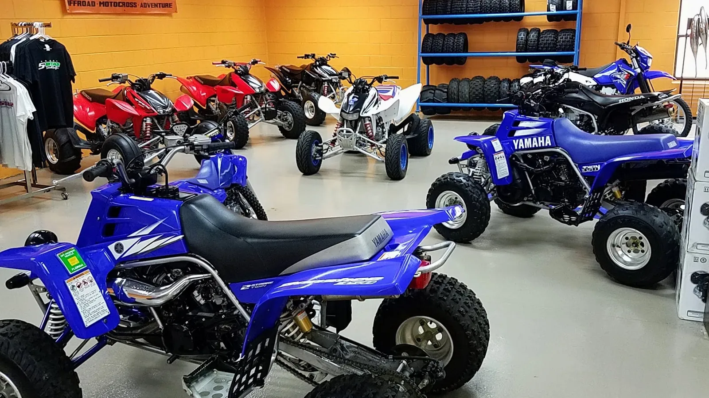

The shop
Service. Parts. Sales.
A clean, well-stocked shop on Eisenhower Pkwy in Lizella with a showroom, parts counter, tool wall and its own dyno cell.

Inside 5 Star
Clean shop. Serious work.
“Finding a good clean shop is very hard to find. These guys are your answer.” Brenton field, Google review

Buy · Sell · TradeStraight from their Facebook bio. Call to ask what’s on the floor.


Easy to get inWheelchair-accessible entrance and parking, plus a restroom on site.

Pay your wayCredit, debit and NFC mobile payments accepted.
Own dyno cell →Tuning happens in-house. Take the dyno tour.Gallery
Out of the shop
Builds, engines and dyno days, all from the shop’s own Google and Facebook photos. Drag or swipe, tap to enlarge.
Lizella · Macon area
Come see the shop.
8094 Eisenhower Pkwy in Lizella. Open Tuesday to Friday 9 to 6, Saturday 9 to 2.